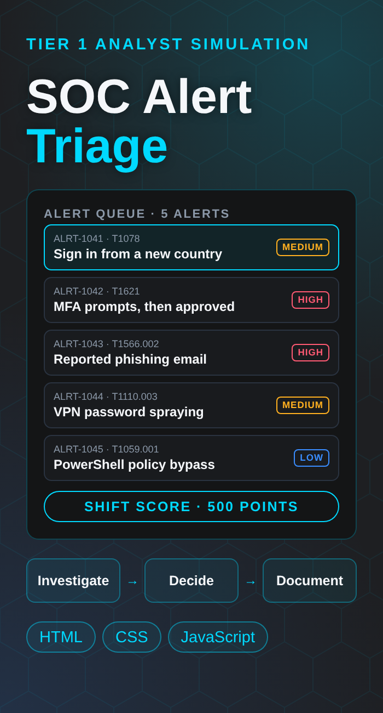

SOC Analyst Labs


SOC Alert Triage
Case Study
Overview / What I Built
I built this to practice thinking like a Tier 1 SOC analyst. You start a shift with 5 alerts in the queue and work each one the way you would on the job: gather evidence, decide what to do, and write the ticket the next shift will read. Not every alert needs to be escalated, so the right answer depends on what you find. All of the data in it is made up.
- 5 alerts: a sign in from a new country, MFA fatigue, a reported phishing email, password spraying on the VPN, and a PowerShell alert that turns out to be approved IT work
- Investigation checks that show the Splunk style query, the log output, and what it means
- A MITRE ATT&CK technique on every alert
- Three decisions per alert, with feedback on whether it was the right call, partly right, or risky
- A ticket step where you pick the note that tells the full story
- A score out of 500 and a shift report at the end
Try It Live
This runs in your browser, so there is nothing to install.
Start the shift and work all 5 alerts. Run a few checks before you decide on each one, then see how your score holds up in the shift report.
Open the Live DemoBuild Notes and Links
What I remember about building it
The first version was one of my first projects, so most of my time went into errors and broken code. I kept getting the syntax wrong and putting strings in the wrong place, and I had to fix it one error at a time until it worked. It only had one alert.
For version 2, I rebuilt it with help from AI tools and focused on the security side: which alerts to include, what evidence matters for each one, when to escalate and when to close, and what a good ticket note looks like. Honey-AI, the newest project on this site, is a better picture of where my skills are now.